1. 本書について
本書では、ツールの動作環境やセットアップについて記載しています。
2. 動作環境
検証済環境
| 項目 | 最小動作環境 | 推奨動作環境 |
|---|---|---|
| CPU | Intel クロック周波数 2GHz 以上 | Core i7（8コア）以上 |
| GPU | NVIDIA® GeForce RTX™ 3060以上 | NVIDIA® GeForce RTX™ 4060 Laptop GPU |
| メモリ | 16GB 以上 | 32GB 以上 |
| ストレージ | 200GB 以上の空き容量 | 同左 |
| OS | Windows 11 Home 64 ビット | 同左 |
3. セットアップの手順
1. Unityのダウンロードとインストール
- Unity Hub をこちらからインストールします。
- Unity Hub とは、Unityのお好きなバージョンをインストールして起動することのできるソフトウェアです。
- Unity Hubを起動し、左のサイドバーから
インストールを選択し、右上のエディターをインストールボタンを押します。
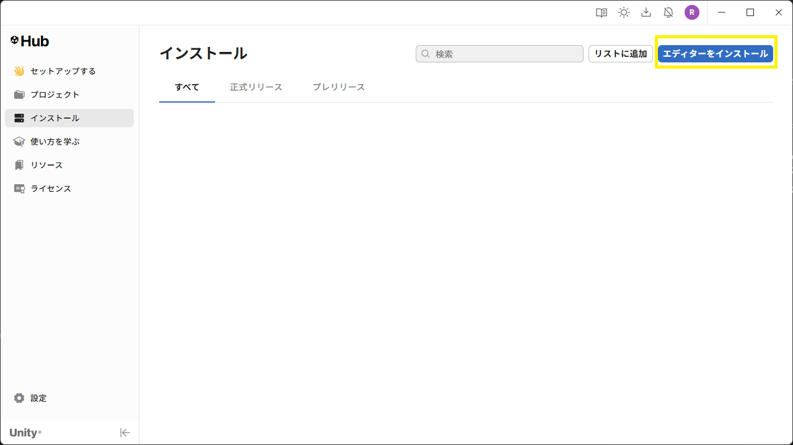
アーカイブタブのダウンロードアーカイブから、Unityダウンロードアーカイブを開き、Unity 6000.3.10f1をインストールします。
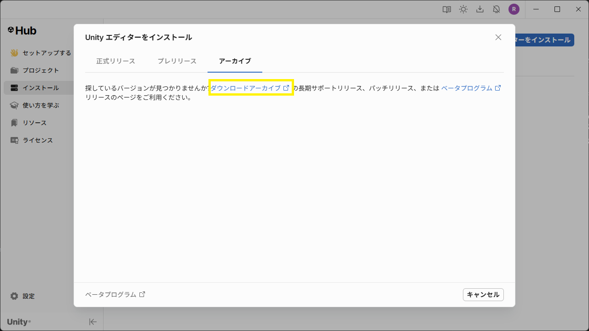
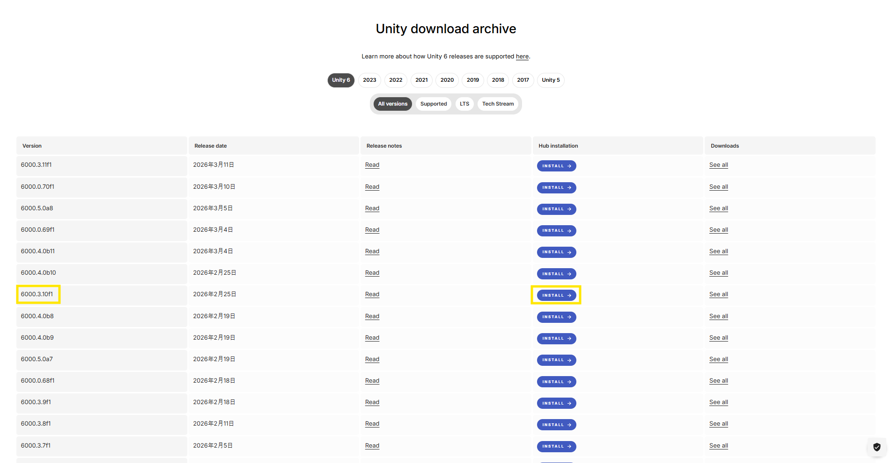
2. Unityプロジェクトを作成
Unity Hub を起動します。
左サイドバーの プロジェクト を押し、右上の 新しいプロジェクト ボタンを押します。
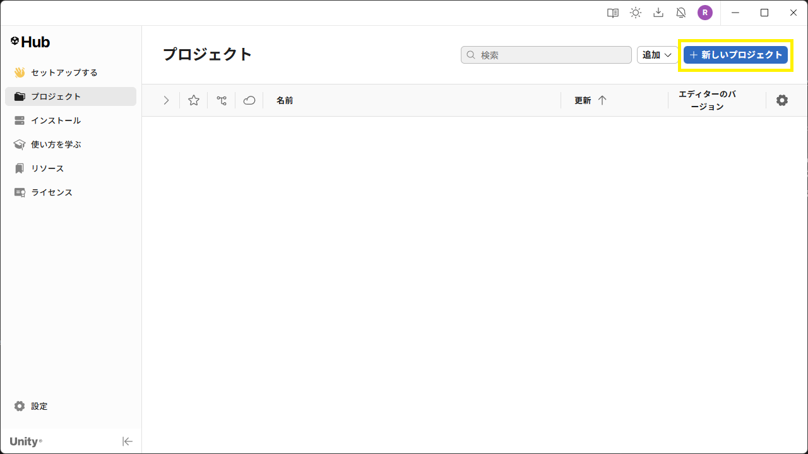
新しいプロジェクトの設定画面で、次のように設定します。
- 画面上部の
エディターバージョンを6000.3.10f1にします。 - 画面中部の
テンプレートはHigh Definition 3Dを選択します。 - 画面右下のプロジェクト名をお好みのものに設定します。
プロジェクトを作成ボタンを押します。
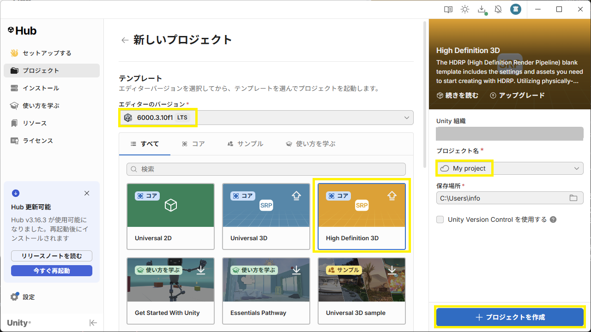
3. ツールをUnityにインポート
- 作成したプロジェクトをクリックすると、Unityが起動します。
- Unityが起動したら、以下の各ツールのリリースページからtgzファイルをダウンロードします。
- また、上記の
LandscapeDesignToolのリリースページにて配布している以下のパッケージをダウンロードしてください。- PLATEAU-SDK-Toolkits-for-Unity（com.synesthesias.plateau-unity-toolkit-2.2.1.tgz）
- PLATEAU-SDK-Maps-Toolkits-for-Unity（com.unity.plateautoolkit.maps-1.0.21.tgz）
Note
git指定で導入する方法は以下を参考にしてください。
SDKの使い方:GitのURL指定で導入する方法
- ダウンロードできたら、Unityのメニューバーから
Window→Package Managerを選択します。 - Package Manager ウィンドウの左上の
＋ボタンからAdd pacakge from tarball...を選択します。
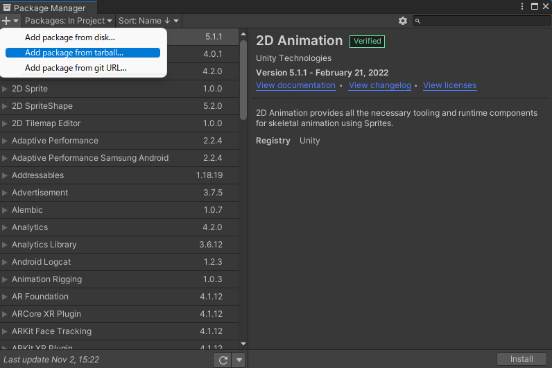
- 先ほどダウンロードした 各ツールの tgz ファイルを指定します。するとウィンドウのパッケージ一覧に各ツール名が表示されます。
Note
tgz ファイルは 必ず以下の順番で1つずつインポートしてください。順番が異なる場合、依存関係の影響により正常に動作しないことがあります。
指定順：
- PLATEAU SDK for Unity
- PLATEAU-SDK-Toolkits-for-Unity
- Cesium for Unity
- LandscapeDesignTool
- PLATEAU-SDK-Maps-Toolkits-for-Unity
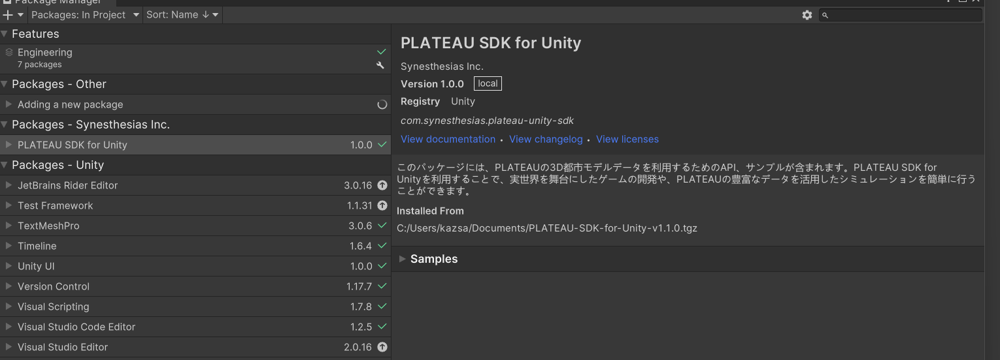
- 続けて、
Unity gltfastのバージョンを更新します。Package Managerウィンドウの左上の＋ボタンからAdd package by name...を選択します。
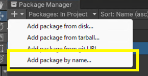
nameにcom.unity.cloud.gltfastを指定し、versionに6.9.0を指定します。指定ができたらAddを押して下さい。
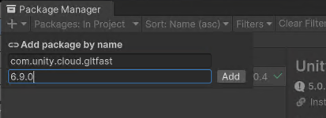
- packageの検索で
gltFastを検索して、Unity gltFastのバージョンが6.9.0に更新されていることを確認できたら完了です。
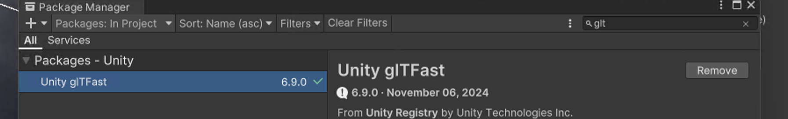
- 全てのツールを導入したら、Package Manager ウィンドウを閉じます。
4. Unityプロジェクトの設定
- Unityのプロジェクト設定をします。メニューバーから Edit → Project Settings… を選びます。
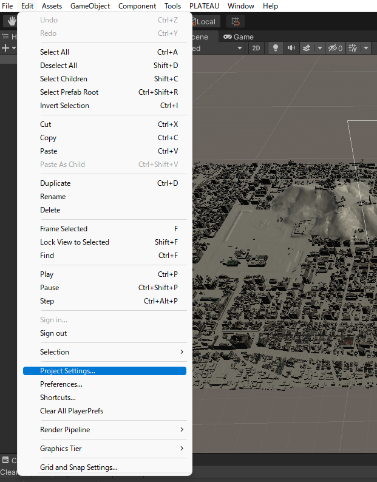
- Project Settings ウィンドウの左側のパネルから
Playerを選択し、Other Settingsタブを開きます。Api Compatibility Levelが.NET Frameworkではない場合、.NET Frameworkに変更してください。 Active Input HandlingをBothに変更して、Project Settings ウィンドウを閉じます。
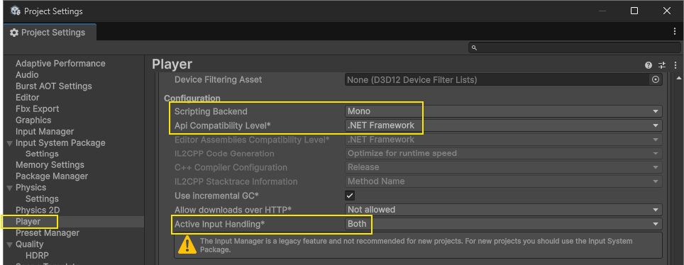
5. 事前準備
新しいシーンの作成
- メニューバーから
File→New Sceneを選択します。 Emptyを選択して新しいシーンを作成します。
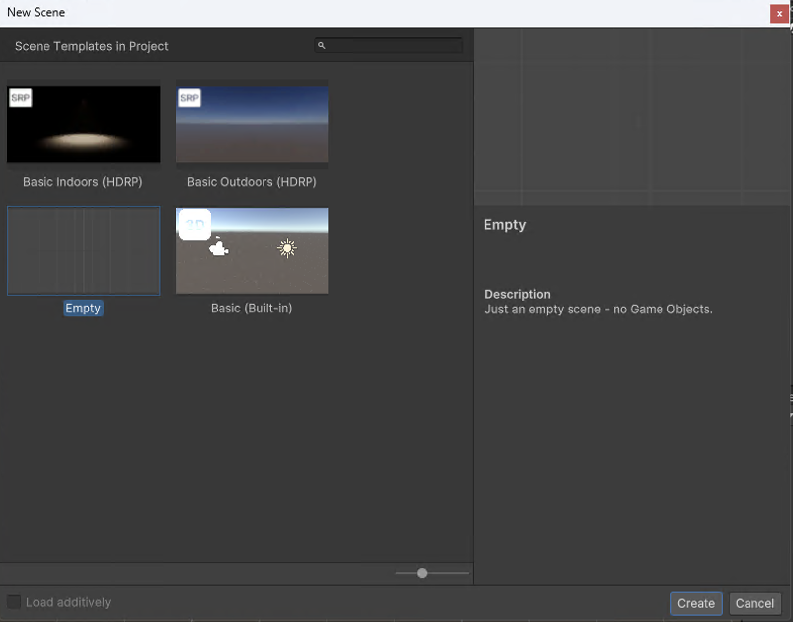
PLATEAUの都市モデル(CityGML)データの用意
事前にG空間情報センターの3D都市モデル（Project PLATEAU）ポータルサイトから景観計画・協議を行いたいエリアの都市モデルデータ(CityGMLファイル一式)をダウンロード、解凍してください。
Note
都市モデルデータには地形(demフォルダ), 建築物(bldgフォルダ)が含まれている必要があります。
6. 事前設定の実行
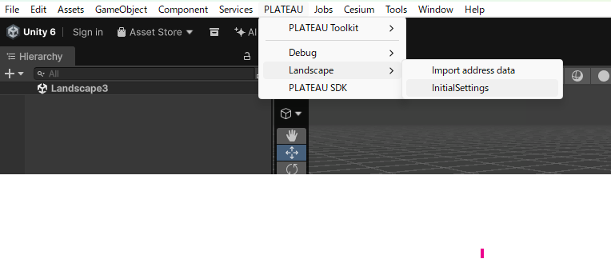
- メニューから
PLATEAU→Landscape→InitialSettingsの順に選択し、初期設定画面を開きます。
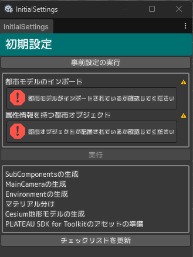
- 初期設定画面の
事前設定の実行ボタンを押して、事前設定の処理を開始します。
7. 都市モデルのインポート
都市モデルインポート画面を開く
メニューから PLATEAU → PLATEAU SDKを選択します。
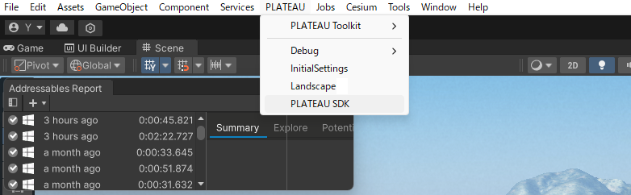
表示されるウィンドウで都市インポートの設定を行います。インポート元を選択し、基準座標系を選んで範囲選択ボタンを押してください。インポート元は、ローカルの場合は udxという名前のフォルダの1つ上のフォルダになります。また、インポート形式を動的タイルに設定する場合はこちらを参照ください。
詳しくは PLATEAUマニュアル: インポート をご覧ください。
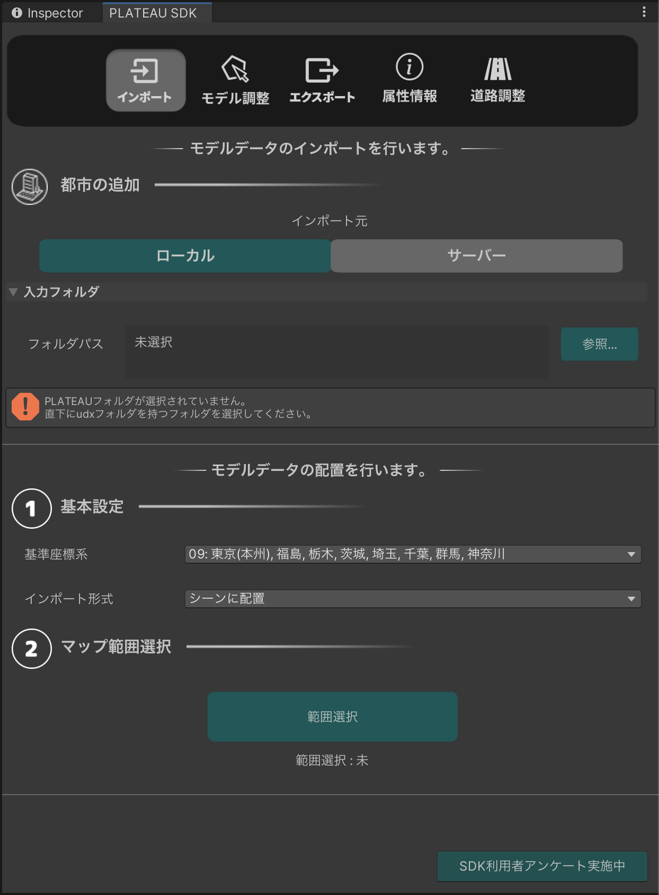
範囲選択
範囲選択画面では、マウスホイールの上下でズームイン・ズームアウト、右クリックのドラッグで視点移動します。オレンジ色の球体をドラッグして範囲を選択し、シーンビュー左上の決定ボタンを押します。
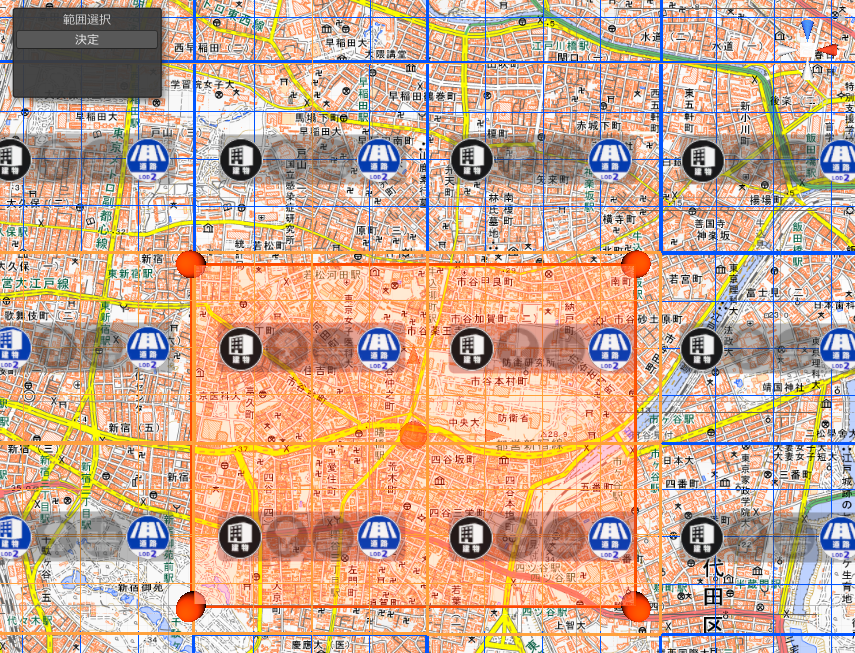
インポートに含める地物の種類を選択します。 景観まちづくり機能を利用するには、次をすべて満たす設定にしておく必要があります。
建築物、道路、土地起伏で、インポートするにチェックが入っていること建築物、道路、土地起伏で、MeshColliderをセットするにチェックが入っていること建築物、道路で、モデル結合は主要地物単位にしておくこと- 動的タイルの場合は地域単位となるため、インポート後にモデル調整から主要地物単位に分割すること
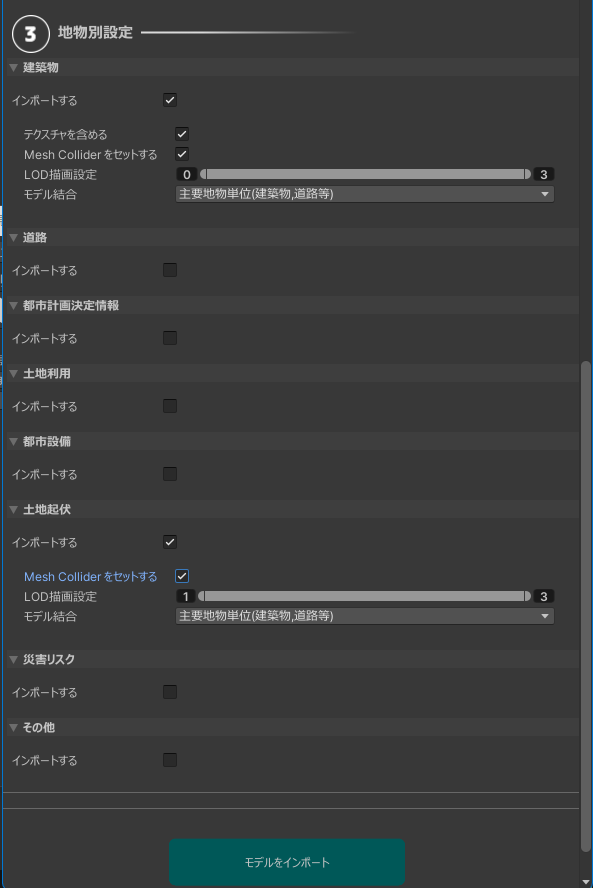
設定したらモデルをインポートボタンを押します。そのままウィンドウを下にスクロールすると処理の進行状況が表示されるので、すべて完了になったらインポートは完了です。
8. 初期設定機能の実行
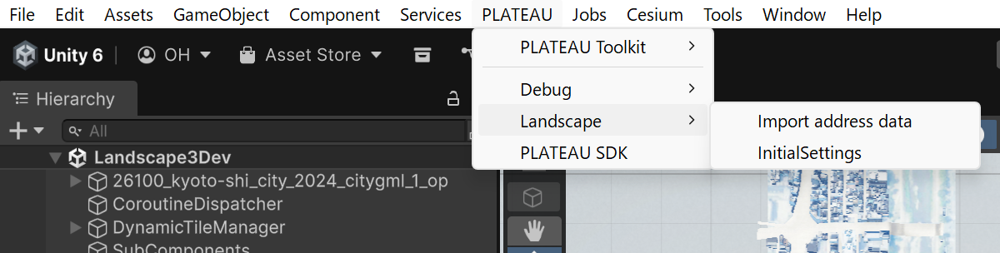
- メニューから
PLATEAU→Landscape→InitialSettingsの順に選択し、初期設定画面を開きます。
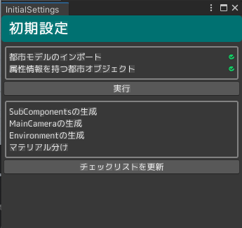
実行に必要なコンポーネントがシーン上に全て揃っている場合、
実行ボタンが押せる状態になります。初期設定画面の
実行ボタンを押して、初期設定の処理を開始します。実行に必要なコンポーネントがシーン上に全て揃っていない場合、実行可能な状態にした後、
チェックリストを更新ボタンを押すことで、実行ボタンが押せる状態になります。チェックリストを更新ボタンの下に初期設定が完了していますと表示されたら、初期設定完了です。
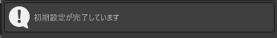
9. 街区レベル位置参照情報のインポート
住所へ移動機能で使用するデータをインポートします。
メニューから
PLATEAU→Landscape→Import address dataの順に選択し、街区レベル位置参照情報インポート画面を開きます。国土数値情報ダウンロードサイトから、3D都市モデルの範囲に該当する街区レベル位置参照情報をダウンロードし、街区レベル位置参照情報インポート画面にドラッグアンドドロップしてください。
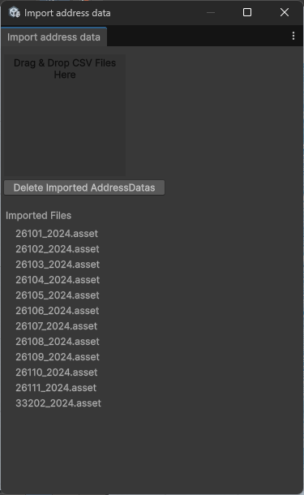